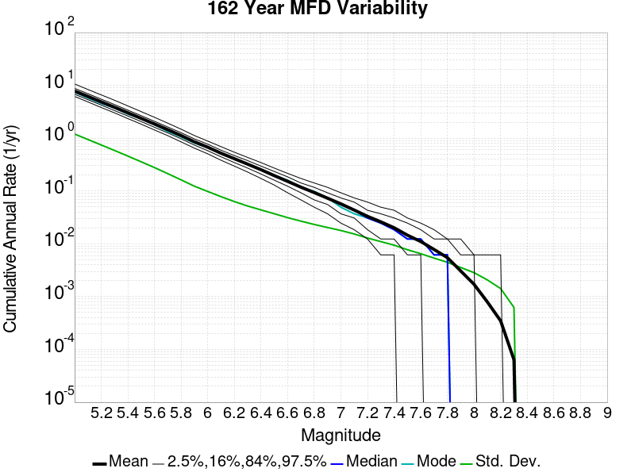
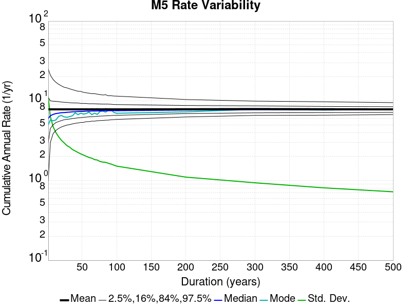

Start 2012, 500 yr, kCOV=1.16, Spontaneous, Historical Catalog Results
| Start 2012, 500 yr, kCOV=1.16, Spontaneous, Historical Catalog |
|---|
| Num Simulations | 228 (incomplete) |
| Start Time | 2012/01/01 00:00:00 UTC |
| Start Time Epoch Milliseconds | 1325376000000 |
| Duration | 500 Years |
| Includes Spontaneous? | true |
| Trigger Ruptures | (none) |
| Historical Ruptures | 60366 Trigger Ruptures |
| First: M7.3 at 1852/01/05 04:40:39 UTC |
| Last: M3.2 at 2011/12/31 19:14:44 UTC |
| Largest: M7.9 at 1857/01/09 16:25:39 UTC |
| Config Generated With | u3etas_config_builder.sh --start-year 2012 --num-simulations 1000 --duration-years 500 --include-spontaneous --historical-catalog --etas-k-cov 1.16 --hpc-site USC_HPC --nodes 36 --hours 24 --queue scec |
Table Of Contents
Magnitude Frequency Distribution
(top)
Legend
- Mean (thick black line): mean annual rate across all 228 catalogs
- 2.5%,97.5% (thin black lines): annual rate percentiles across all 228 catalogs
- Median (thin blue line): median annual rate across all 228 catalogs
- Mode (thin cyan line): modal annual rate across all 228 catalogs (scaled to annualized value)
- 500 yr Probability (thin red line): 500 year probability calculated as the fraction of catalogs with at least 1 occurrence
- 500 yr Supraseismogenic Probability (thin dashed red line): same as above, but only for supraseismogenic ruptures on explicitly modeled UCERF3 faults
- 95% Conf (light red shaded region): binomial 95% confidence bounds on probability

| Mag | Mean | 2.5 %ile | 97.5 %ile | Median | Mode | 500 yr Probability | 500 yr Supra-Seis Prob |
|---|
| M≥5 | 7.764 | 6.714 | 9.288 | 7.650 | 7.910 | 1.000 (100.00%) | 1.000 (100.00%) |
| M≥5.1 | 6.138 | 5.278 | 7.334 | 6.068 | 6.260 | 1.000 (100.00%) | 1.000 (100.00%) |
| M≥5.2 | 4.851 | 4.180 | 5.832 | 4.802 | 5.184 | 1.000 (100.00%) | 1.000 (100.00%) |
| M≥5.3 | 3.827 | 3.284 | 4.600 | 3.806 | 4.220 | 1.000 (100.00%) | 1.000 (100.00%) |
| M≥5.4 | 3.016 | 2.598 | 3.604 | 3.000 | 2.934 | 1.000 (100.00%) | 1.000 (100.00%) |
| M≥5.5 | 2.372 | 2.036 | 2.814 | 2.350 | 2.144 | 1.000 (100.00%) | 1.000 (100.00%) |
| M≥5.6 | 1.857 | 1.598 | 2.216 | 1.836 | 1.836 | 1.000 (100.00%) | 1.000 (100.00%) |
| M≥5.7 | 1.448 | 1.240 | 1.726 | 1.428 | 1.332 | 1.000 (100.00%) | 1.000 (100.00%) |
| M≥5.8 | 1.121 | 0.960 | 1.310 | 1.110 | 1.192 | 1.000 (100.00%) | 1.000 (100.00%) |
| M≥5.9 | 0.855 | 0.742 | 1.004 | 0.846 | 0.836 | 1.000 (100.00%) | 1.000 (100.00%) |
| M≥6 | 0.677 | 0.578 | 0.786 | 0.674 | 0.676 | 1.000 (100.00%) | 1.000 (100.00%) |
| M≥6.1 | 0.521 | 0.446 | 0.628 | 0.516 | 0.514 | 1.000 (100.00%) | 1.000 (100.00%) |
| M≥6.2 | 0.410 | 0.352 | 0.480 | 0.406 | 0.404 | 1.000 (100.00%) | 1.000 (100.00%) |
| M≥6.3 | 0.323 | 0.276 | 0.388 | 0.322 | 0.332 | 1.000 (100.00%) | 1.000 (100.00%) |
| M≥6.4 | 0.254 | 0.212 | 0.304 | 0.252 | 0.246 | 1.000 (100.00%) | 1.000 (100.00%) |
| M≥6.5 | 0.197 | 0.162 | 0.240 | 0.198 | 0.190 | 1.000 (100.00%) | 1.000 (100.00%) |
| M≥6.6 | 0.154 | 0.122 | 0.188 | 0.154 | 0.148 | 1.000 (100.00%) | 1.000 (100.00%) |
| M≥6.7 | 0.118 | 0.094 | 0.144 | 0.118 | 0.116 | 1.000 (100.00%) | 1.000 (100.00%) |
| M≥6.8 | 0.093 | 0.072 | 0.120 | 0.092 | 0.098 | 1.000 (100.00%) | 1.000 (100.00%) |
| M≥6.9 | 0.073 | 0.050 | 0.094 | 0.072 | 0.072 | 1.000 (100.00%) | 1.000 (100.00%) |
| M≥7 | 0.057 | 0.038 | 0.074 | 0.056 | 0.054 | 1.000 (100.00%) | 1.000 (100.00%) |
| M≥7.1 | 0.043 | 0.028 | 0.060 | 0.044 | 0.040 | 1.000 (100.00%) | 1.000 (100.00%) |
| M≥7.2 | 0.032 | 0.020 | 0.046 | 0.032 | 0.030 | 1.000 (100.00%) | 1.000 (100.00%) |
| M≥7.3 | 0.026 | 0.016 | 0.036 | 0.026 | 0.028 | 1.000 (100.00%) | 1.000 (100.00%) |
| M≥7.4 | 0.020 | 0.010 | 0.030 | 0.020 | 0.020 | 1.000 (100.00%) | 1.000 (100.00%) |
| M≥7.5 | 0.015 | 8.00E-3 | 0.022 | 0.014 | 0.014 | 1.000 (100.00%) | 1.000 (100.00%) |
| M≥7.6 | 0.011 | 6.00E-3 | 0.018 | 0.010 | 0.012 | 1.000 (100.00%) | 1.000 (100.00%) |
| M≥7.7 | 7.79E-3 | 4.00E-3 | 0.012 | 8.00E-3 | 8.00E-3 | 1.000 (100.00%) | 1.000 (100.00%) |
| M≥7.8 | 5.32E-3 | 2.00E-3 | 0.010 | 6.00E-3 | 6.00E-3 | 0.996 (99.56%) | 0.996 (99.56%) |
| M≥7.9 | 2.96E-3 | 0.000 | 6.00E-3 | 2.00E-3 | 4.00E-3 | 0.860 (85.96%) | 0.860 (85.96%) |
| M≥8 | 1.78E-3 | 0.000 | 4.00E-3 | 2.00E-3 | 2.00E-3 | 0.645 (64.47%) | 0.645 (64.47%) |
| M≥8.1 | 8.16E-4 | 0.000 | 4.00E-3 | 0.000 | 0.000 | 0.368 (36.84%) | 0.368 (36.84%) |
| M≥8.2 | 4.12E-4 | 0.000 | 2.00E-3 | 0.000 | 0.000 | 0.189 (18.86%) | 0.189 (18.86%) |
| M≥8.3 | 1.05E-4 | 0.000 | 2.00E-3 | 0.000 | 0.000 | 0.048 (4.82%) | 0.048 (4.82%) |
| M≥8.4 | 0.000 | 0.000 | 0.000 | 0.000 | 0.000 | 0.000 (0.00%) | 0.000 (0.00%) |
| M≥8.5 | 0.000 | 0.000 | 0.000 | 0.000 | 0.000 | 0.000 (0.00%) | 0.000 (0.00%) |
| M≥8.6 | 0.000 | 0.000 | 0.000 | 0.000 | 0.000 | 0.000 (0.00%) | 0.000 (0.00%) |
| M≥8.7 | 0.000 | 0.000 | 0.000 | 0.000 | 0.000 | 0.000 (0.00%) | 0.000 (0.00%) |
| M≥8.8 | 0.000 | 0.000 | 0.000 | 0.000 | 0.000 | 0.000 (0.00%) | 0.000 (0.00%) |
| M≥8.9 | 0.000 | 0.000 | 0.000 | 0.000 | 0.000 | 0.000 (0.00%) | 0.000 (0.00%) |
| M≥9 | 0.000 | 0.000 | 0.000 | 0.000 | 0.000 | 0.000 (0.00%) | 0.000 (0.00%) |
Long Term Rate Variability
(top)
162 Year Variability
(top)

Download CSV Here
| Magnitude | Mean | Median | Mode | Std. Dev. | 2.5 %-ile | 16 %-ile | 84 %-ile | 97.5 %-ile |
|---|
| 5.0 | 7.7515073 | 7.5925927 | 7.2777777 | 1.1315436 | 6.0617285 | 6.740741 | 8.796296 | 10.351851 |
| 5.1 | 6.1274457 | 5.987654 | 6.148148 | 0.89596283 | 4.7530866 | 5.339506 | 6.9444447 | 8.271605 |
| 5.2 | 4.8433146 | 4.7530866 | 4.759259 | 0.7104285 | 3.7901235 | 4.216049 | 5.4753084 | 6.5555553 |
| 5.3 | 3.8221788 | 3.7407408 | 3.8333333 | 0.5566909 | 2.9691358 | 3.3333333 | 4.339506 | 5.1296296 |
| 5.4 | 3.0123546 | 2.9506173 | 3.0246913 | 0.4385601 | 2.351852 | 2.6111112 | 3.4135802 | 4.0740743 |
| 5.5 | 2.3687007 | 2.3271606 | 2.345679 | 0.34459382 | 1.8518518 | 2.0555556 | 2.691358 | 3.1851852 |
| 5.6 | 1.8547848 | 1.8148148 | 1.7407408 | 0.2708221 | 1.4320987 | 1.6049383 | 2.1049383 | 2.4567902 |
| 5.7 | 1.4463125 | 1.4197531 | 1.4074074 | 0.21142195 | 1.0925926 | 1.2469136 | 1.6481482 | 1.9320987 |
| 5.8 | 1.1191521 | 1.0987654 | 1.0617284 | 0.16314681 | 0.845679 | 0.962963 | 1.2716049 | 1.4876543 |
| 5.9 | 0.8535575 | 0.845679 | 0.8703704 | 0.122577615 | 0.6419753 | 0.7345679 | 0.9691358 | 1.1358025 |
| 6.0 | 0.67644936 | 0.6666667 | 0.61728394 | 0.09589723 | 0.50617284 | 0.58641976 | 0.77160496 | 0.90123457 |
| 6.1 | 0.5200166 | 0.5123457 | 0.5123457 | 0.076674156 | 0.38271606 | 0.45061728 | 0.58641976 | 0.6851852 |
| 6.2 | 0.4097538 | 0.4074074 | 0.4074074 | 0.06432424 | 0.2962963 | 0.35185185 | 0.47530866 | 0.5555556 |
| 6.3 | 0.32271135 | 0.3148148 | 0.3148148 | 0.052212745 | 0.22839506 | 0.27160493 | 0.37037036 | 0.4382716 |
| 6.4 | 0.25327593 | 0.24691358 | 0.25308642 | 0.043266233 | 0.17901234 | 0.20987654 | 0.2962963 | 0.35185185 |
| 6.5 | 0.1971067 | 0.19753087 | 0.2037037 | 0.035968546 | 0.13580246 | 0.16049382 | 0.2345679 | 0.27160493 |
| 6.6 | 0.1541044 | 0.15432099 | 0.16049382 | 0.031275533 | 0.09876543 | 0.12345679 | 0.18518518 | 0.22222222 |
| 6.7 | 0.11815934 | 0.11728395 | 0.11111111 | 0.026402619 | 0.074074075 | 0.09259259 | 0.14814815 | 0.17283951 |
| 6.8 | 0.093215294 | 0.09259259 | 0.086419754 | 0.023370437 | 0.055555556 | 0.06790123 | 0.11728395 | 0.14197531 |
| 6.9 | 0.07254891 | 0.074074075 | 0.074074075 | 0.019723868 | 0.037037037 | 0.055555556 | 0.09259259 | 0.11111111 |
| 7.0 | 0.056611437 | 0.055555556 | 0.055555556 | 0.017371312 | 0.024691358 | 0.037037037 | 0.074074075 | 0.09259259 |
| 7.1 | 0.042975236 | 0.043209877 | 0.043209877 | 0.0150889335 | 0.012345679 | 0.024691358 | 0.055555556 | 0.074074075 |
| 7.2 | 0.03219082 | 0.030864198 | 0.037037037 | 0.012727077 | 0.012345679 | 0.018518519 | 0.043209877 | 0.055555556 |
| 7.3 | 0.0254765 | 0.024691358 | 0.024691358 | 0.011148741 | 0.0061728396 | 0.012345679 | 0.037037037 | 0.049382716 |
| 7.4 | 0.019917335 | 0.018518519 | 0.018518519 | 0.009669311 | 0.0 | 0.012345679 | 0.030864198 | 0.037037037 |
| 7.5 | 0.014430366 | 0.012345679 | 0.012345679 | 0.007943344 | 0.0 | 0.0061728396 | 0.024691358 | 0.030864198 |
| 7.6 | 0.010748321 | 0.012345679 | 0.012345679 | 0.0066689514 | 0.0 | 0.0061728396 | 0.018518519 | 0.024691358 |
| 7.7 | 0.007770197 | 0.0061728396 | 0.0061728396 | 0.00567462 | 0.0 | 0.0 | 0.012345679 | 0.018518519 |
| 7.8 | 0.0052613528 | 0.0061728396 | 0.0061728396 | 0.004469598 | 0.0 | 0.0 | 0.012345679 | 0.012345679 |
| 7.9 | 0.002942026 | 0.0 | 0.0 | 0.0034763992 | 0.0 | 0.0 | 0.0061728396 | 0.012345679 |
| 8.0 | 0.0017688253 | 0.0 | 0.0 | 0.002910465 | 0.0 | 0.0 | 0.0061728396 | 0.0061728396 |
| 8.1 | 7.851419E-4 | 0.0 | 0.0 | 0.0020582275 | 0.0 | 0.0 | 0.0 | 0.0061728396 |
| 8.2 | 3.79034E-4 | 0.0 | 0.0 | 0.0014829917 | 0.0 | 0.0 | 0.0 | 0.0061728396 |
| 8.3 | 7.2196955E-5 | 0.0 | 0.0 | 6.641481E-4 | 0.0 | 0.0 | 0.0 | 0.0 |
| 8.4 | 0.0 | 0.0 | 0.0 | 0.0 | 0.0 | 0.0 | 0.0 | 0.0 |
| 8.5 | 0.0 | 0.0 | 0.0 | 0.0 | 0.0 | 0.0 | 0.0 | 0.0 |
| 8.6 | 0.0 | 0.0 | 0.0 | 0.0 | 0.0 | 0.0 | 0.0 | 0.0 |
| 8.7 | 0.0 | 0.0 | 0.0 | 0.0 | 0.0 | 0.0 | 0.0 | 0.0 |
| 8.8 | 0.0 | 0.0 | 0.0 | 0.0 | 0.0 | 0.0 | 0.0 | 0.0 |
| 8.9 | 0.0 | 0.0 | 0.0 | 0.0 | 0.0 | 0.0 | 0.0 | 0.0 |
| 9.0 | 0.0 | 0.0 | 0.0 | 0.0 | 0.0 | 0.0 | 0.0 | 0.0 |
80 Year Variability
(top)

Download CSV Here
| Magnitude | Mean | Median | Mode | Std. Dev. | 2.5 %-ile | 16 %-ile | 84 %-ile | 97.5 %-ile |
|---|
| 5.0 | 7.749132 | 7.4375 | 6.575 | 1.6017861 | 5.675 | 6.4 | 9.0875 | 11.6125 |
| 5.1 | 6.1255755 | 5.875 | 5.6 | 1.2702177 | 4.45 | 5.0625 | 7.1625 | 9.1375 |
| 5.2 | 4.8417125 | 4.6375 | 4.35 | 1.0036147 | 3.475 | 4.0125 | 5.7 | 7.225 |
| 5.3 | 3.8208973 | 3.675 | 3.4875 | 0.78832275 | 2.7625 | 3.1375 | 4.475 | 5.625 |
| 5.4 | 3.0112665 | 2.9 | 2.5625 | 0.6191814 | 2.1625 | 2.4625 | 3.5375 | 4.4625 |
| 5.5 | 2.3679185 | 2.275 | 2.15 | 0.4899978 | 1.6875 | 1.9375 | 2.775 | 3.525 |
| 5.6 | 1.8540661 | 1.7875 | 1.8125 | 0.38345835 | 1.3125 | 1.5125 | 2.175 | 2.7625 |
| 5.7 | 1.4457967 | 1.4 | 1.25 | 0.2972013 | 1.0125 | 1.175 | 1.7125 | 2.125 |
| 5.8 | 1.118823 | 1.0875 | 0.9875 | 0.22871286 | 0.7625 | 0.9 | 1.325 | 1.65 |
| 5.9 | 0.8529331 | 0.8375 | 0.875 | 0.17244904 | 0.575 | 0.6875 | 1.0125 | 1.25 |
| 6.0 | 0.6762244 | 0.6625 | 0.6 | 0.13835269 | 0.45 | 0.5375 | 0.8125 | 0.9875 |
| 6.1 | 0.51953584 | 0.5125 | 0.4875 | 0.111902826 | 0.325 | 0.4125 | 0.625 | 0.7625 |
| 6.2 | 0.40933844 | 0.4 | 0.375 | 0.09288939 | 0.2375 | 0.3125 | 0.5 | 0.6125 |
| 6.3 | 0.32237756 | 0.3125 | 0.275 | 0.07774099 | 0.1875 | 0.25 | 0.4 | 0.4875 |
| 6.4 | 0.2530976 | 0.25 | 0.2625 | 0.066136 | 0.1375 | 0.1875 | 0.3125 | 0.4 |
| 6.5 | 0.19683845 | 0.2 | 0.2 | 0.055967588 | 0.1 | 0.1375 | 0.25 | 0.325 |
| 6.6 | 0.15390168 | 0.15 | 0.1375 | 0.048185956 | 0.075 | 0.1125 | 0.2 | 0.2625 |
| 6.7 | 0.11800073 | 0.1125 | 0.1125 | 0.040762838 | 0.05 | 0.075 | 0.1625 | 0.2125 |
| 6.8 | 0.09313779 | 0.0875 | 0.0875 | 0.035388812 | 0.0375 | 0.0625 | 0.125 | 0.175 |
| 6.9 | 0.072459795 | 0.075 | 0.0625 | 0.030569129 | 0.025 | 0.0375 | 0.1 | 0.1375 |
| 7.0 | 0.05656981 | 0.05 | 0.05 | 0.026670387 | 0.0125 | 0.025 | 0.0875 | 0.1125 |
| 7.1 | 0.04293677 | 0.0375 | 0.0375 | 0.022915596 | 0.0 | 0.025 | 0.0625 | 0.0875 |
| 7.2 | 0.032118056 | 0.025 | 0.025 | 0.019325338 | 0.0 | 0.0125 | 0.05 | 0.075 |
| 7.3 | 0.025411185 | 0.025 | 0.025 | 0.01681448 | 0.0 | 0.0125 | 0.0375 | 0.0625 |
| 7.4 | 0.019873904 | 0.0125 | 0.0125 | 0.014608009 | 0.0 | 0.0 | 0.0375 | 0.05 |
| 7.5 | 0.014373172 | 0.0125 | 0.0125 | 0.01253324 | 0.0 | 0.0 | 0.025 | 0.0375 |
| 7.6 | 0.010681652 | 0.0125 | 0.0125 | 0.0104645435 | 0.0 | 0.0 | 0.025 | 0.0375 |
| 7.7 | 0.0077119884 | 0.0 | 0.0 | 0.008824511 | 0.0 | 0.0 | 0.0125 | 0.025 |
| 7.8 | 0.0052083335 | 0.0 | 0.0 | 0.0070796297 | 0.0 | 0.0 | 0.0125 | 0.025 |
| 7.9 | 0.0029057018 | 0.0 | 0.0 | 0.005431278 | 0.0 | 0.0 | 0.0125 | 0.0125 |
| 8.0 | 0.0017635234 | 0.0 | 0.0 | 0.0044051204 | 0.0 | 0.0 | 0.0 | 0.0125 |
| 8.1 | 7.8581873E-4 | 0.0 | 0.0 | 0.0030351207 | 0.0 | 0.0 | 0.0 | 0.0125 |
| 8.2 | 3.7463452E-4 | 0.0 | 0.0 | 0.0021321124 | 0.0 | 0.0 | 0.0 | 0.0125 |
| 8.3 | 7.3099414E-5 | 0.0 | 0.0 | 9.534483E-4 | 0.0 | 0.0 | 0.0 | 0.0 |
| 8.4 | 0.0 | 0.0 | 0.0 | 0.0 | 0.0 | 0.0 | 0.0 | 0.0 |
| 8.5 | 0.0 | 0.0 | 0.0 | 0.0 | 0.0 | 0.0 | 0.0 | 0.0 |
| 8.6 | 0.0 | 0.0 | 0.0 | 0.0 | 0.0 | 0.0 | 0.0 | 0.0 |
| 8.7 | 0.0 | 0.0 | 0.0 | 0.0 | 0.0 | 0.0 | 0.0 | 0.0 |
| 8.8 | 0.0 | 0.0 | 0.0 | 0.0 | 0.0 | 0.0 | 0.0 | 0.0 |
| 8.9 | 0.0 | 0.0 | 0.0 | 0.0 | 0.0 | 0.0 | 0.0 | 0.0 |
| 9.0 | 0.0 | 0.0 | 0.0 | 0.0 | 0.0 | 0.0 | 0.0 | 0.0 |
28 Year Variability
(top)

Download CSV Here
| Magnitude | Mean | Median | Mode | Std. Dev. | 2.5 %-ile | 16 %-ile | 84 %-ile | 97.5 %-ile |
|---|
| 5.0 | 7.7511888 | 7.142857 | 6.428571 | 2.6020741 | 4.964286 | 5.821429 | 9.464286 | 14.071428 |
| 5.1 | 6.127783 | 5.678571 | 5.607143 | 2.0602791 | 3.857143 | 4.607143 | 7.535714 | 11.071428 |
| 5.2 | 4.8441415 | 4.464286 | 4.464286 | 1.634801 | 3.0 | 3.607143 | 5.964286 | 8.785714 |
| 5.3 | 3.8230503 | 3.5357144 | 3.0357144 | 1.2841737 | 2.3214285 | 2.8214285 | 4.714286 | 6.964286 |
| 5.4 | 3.0128355 | 2.7857144 | 2.642857 | 1.0130866 | 1.7857143 | 2.2142856 | 3.7142856 | 5.5 |
| 5.5 | 2.369278 | 2.2142856 | 2.2142856 | 0.80134505 | 1.3571428 | 1.7142857 | 2.9285715 | 4.357143 |
| 5.6 | 1.8553646 | 1.75 | 1.6071428 | 0.62720615 | 1.0357143 | 1.3214285 | 2.3214285 | 3.392857 |
| 5.7 | 1.4465207 | 1.3571428 | 1.1428572 | 0.48818058 | 0.75 | 1.0357143 | 1.8214285 | 2.607143 |
| 5.8 | 1.1192596 | 1.0714285 | 1.0357143 | 0.37762854 | 0.5714286 | 0.78571427 | 1.4285715 | 2.0 |
| 5.9 | 0.85325444 | 0.8214286 | 0.78571427 | 0.28883323 | 0.39285713 | 0.5714286 | 1.1071428 | 1.5 |
| 6.0 | 0.67651665 | 0.64285713 | 0.5714286 | 0.23158452 | 0.2857143 | 0.4642857 | 0.89285713 | 1.1785715 |
| 6.1 | 0.51969075 | 0.5 | 0.4642857 | 0.18789467 | 0.21428572 | 0.35714287 | 0.71428573 | 0.9285714 |
| 6.2 | 0.40952566 | 0.39285713 | 0.39285713 | 0.15602526 | 0.14285715 | 0.25 | 0.5714286 | 0.75 |
| 6.3 | 0.32258034 | 0.32142857 | 0.2857143 | 0.1316765 | 0.10714286 | 0.17857143 | 0.4642857 | 0.60714287 |
| 6.4 | 0.25324342 | 0.25 | 0.25 | 0.11264086 | 0.071428575 | 0.14285715 | 0.35714287 | 0.5 |
| 6.5 | 0.196963 | 0.17857143 | 0.14285715 | 0.09613692 | 0.035714287 | 0.10714286 | 0.2857143 | 0.42857143 |
| 6.6 | 0.1540524 | 0.14285715 | 0.14285715 | 0.08212159 | 0.035714287 | 0.071428575 | 0.21428572 | 0.35714287 |
| 6.7 | 0.11811698 | 0.10714286 | 0.10714286 | 0.07016635 | 0.0 | 0.035714287 | 0.17857143 | 0.2857143 |
| 6.8 | 0.09324782 | 0.071428575 | 0.071428575 | 0.061201748 | 0.0 | 0.035714287 | 0.14285715 | 0.25 |
| 6.9 | 0.07256192 | 0.071428575 | 0.035714287 | 0.053504866 | 0.0 | 0.035714287 | 0.10714286 | 0.17857143 |
| 7.0 | 0.056667402 | 0.035714287 | 0.035714287 | 0.04709421 | 0.0 | 0.0 | 0.10714286 | 0.17857143 |
| 7.1 | 0.043021157 | 0.035714287 | 0.035714287 | 0.04036844 | 0.0 | 0.0 | 0.071428575 | 0.14285715 |
| 7.2 | 0.032212887 | 0.035714287 | 0.0 | 0.034158487 | 0.0 | 0.0 | 0.071428575 | 0.10714286 |
| 7.3 | 0.025477296 | 0.035714287 | 0.0 | 0.02986996 | 0.0 | 0.0 | 0.035714287 | 0.10714286 |
| 7.4 | 0.01993034 | 0.0 | 0.0 | 0.026391111 | 0.0 | 0.0 | 0.035714287 | 0.071428575 |
| 7.5 | 0.014420242 | 0.0 | 0.0 | 0.022361452 | 0.0 | 0.0 | 0.035714287 | 0.071428575 |
| 7.6 | 0.010716128 | 0.0 | 0.0 | 0.01911505 | 0.0 | 0.0 | 0.035714287 | 0.071428575 |
| 7.7 | 0.007730724 | 0.0 | 0.0 | 0.015996521 | 0.0 | 0.0 | 0.035714287 | 0.035714287 |
| 7.8 | 0.00520603 | 0.0 | 0.0 | 0.013015418 | 0.0 | 0.0 | 0.0 | 0.035714287 |
| 7.9 | 0.002911691 | 0.0 | 0.0 | 0.009874748 | 0.0 | 0.0 | 0.0 | 0.035714287 |
| 8.0 | 0.0017691287 | 0.0 | 0.0 | 0.0077504097 | 0.0 | 0.0 | 0.0 | 0.035714287 |
| 8.1 | 7.83208E-4 | 0.0 | 0.0 | 0.005231191 | 0.0 | 0.0 | 0.0 | 0.0 |
| 8.2 | 3.685685E-4 | 0.0 | 0.0 | 0.0036098033 | 0.0 | 0.0 | 0.0 | 0.0 |
| 8.3 | 7.3713694E-5 | 0.0 | 0.0 | 0.0016210725 | 0.0 | 0.0 | 0.0 | 0.0 |
| 8.4 | 0.0 | 0.0 | 0.0 | 0.0 | 0.0 | 0.0 | 0.0 | 0.0 |
| 8.5 | 0.0 | 0.0 | 0.0 | 0.0 | 0.0 | 0.0 | 0.0 | 0.0 |
| 8.6 | 0.0 | 0.0 | 0.0 | 0.0 | 0.0 | 0.0 | 0.0 | 0.0 |
| 8.7 | 0.0 | 0.0 | 0.0 | 0.0 | 0.0 | 0.0 | 0.0 | 0.0 |
| 8.8 | 0.0 | 0.0 | 0.0 | 0.0 | 0.0 | 0.0 | 0.0 | 0.0 |
| 8.9 | 0.0 | 0.0 | 0.0 | 0.0 | 0.0 | 0.0 | 0.0 | 0.0 |
| 9.0 | 0.0 | 0.0 | 0.0 | 0.0 | 0.0 | 0.0 | 0.0 | 0.0 |
Variability Duration Dependence
(top)

Download CSV Here
| Duration (years) | Mean | Median | Mode | Std. Dev. | 2.5 %-ile | 16 %-ile | 84 %-ile | 97.5 %-ile |
|---|
| 1.0 | 7.764114 | 6.0 | 5.0 | 10.880791 | 1.0 | 3.0 | 11.0 | 25.0 |
| 4.0 | 7.764114 | 6.5 | 5.75 | 6.176555 | 3.25 | 4.5 | 10.0 | 20.75 |
| 8.0 | 7.7606554 | 6.75 | 6.375 | 4.569124 | 3.875 | 5.0 | 9.875 | 18.5 |
| 12.0 | 7.7476463 | 6.8333335 | 6.5 | 3.777591 | 4.25 | 5.3333335 | 9.666667 | 16.75 |
| 16.0 | 7.7606554 | 6.9375 | 5.9375 | 3.4463625 | 4.5 | 5.5 | 9.6875 | 15.9375 |
| 20.0 | 7.764114 | 7.0 | 6.8 | 3.1877184 | 4.65 | 5.65 | 9.6 | 15.1 |
| 24.0 | 7.749132 | 7.0833335 | 6.25 | 2.781094 | 4.7916665 | 5.75 | 9.5 | 14.333333 |
| 28.0 | 7.7511888 | 7.142857 | 6.428571 | 2.6020741 | 4.964286 | 5.821429 | 9.464286 | 14.071428 |
| 32.0 | 7.749132 | 7.1875 | 6.71875 | 2.492079 | 5.03125 | 5.90625 | 9.4375 | 13.90625 |
| 36.0 | 7.7477975 | 7.2222223 | 6.361111 | 2.3351736 | 5.0833335 | 6.0 | 9.444445 | 13.333333 |
| 40.0 | 7.749132 | 7.225 | 6.65 | 2.206673 | 5.2 | 6.075 | 9.35 | 13.025 |
| 44.0 | 7.7492027 | 7.25 | 6.6363635 | 2.1477368 | 5.2272725 | 6.090909 | 9.295455 | 12.909091 |
| 48.0 | 7.749132 | 7.2708335 | 7.1875 | 2.0583048 | 5.2916665 | 6.125 | 9.25 | 12.791667 |
| 52.0 | 7.7477975 | 7.3076925 | 7.230769 | 1.9581156 | 5.4038463 | 6.173077 | 9.192307 | 12.75 |
| 56.0 | 7.746818 | 7.321429 | 5.982143 | 1.8262956 | 5.464286 | 6.214286 | 9.142858 | 12.553572 |
| 60.0 | 7.749132 | 7.366667 | 6.9666667 | 1.8347244 | 5.4666667 | 6.25 | 9.15 | 12.133333 |
| 64.0 | 7.746818 | 7.375 | 6.875 | 1.7406894 | 5.53125 | 6.28125 | 9.09375 | 12.1875 |
| 68.0 | 7.7511888 | 7.4117646 | 6.3088236 | 1.7239066 | 5.602941 | 6.2647057 | 9.1470585 | 11.941176 |
| 72.0 | 7.7568936 | 7.4444447 | 6.75 | 1.6422477 | 5.5416665 | 6.3333335 | 9.097222 | 11.888889 |
| 76.0 | 7.7563767 | 7.394737 | 6.75 | 1.6253978 | 5.605263 | 6.394737 | 9.078947 | 11.710526 |
| 80.0 | 7.749132 | 7.4375 | 6.575 | 1.6017861 | 5.675 | 6.4 | 9.0875 | 11.6125 |
| 84.0 | 7.7576127 | 7.452381 | 6.678571 | 1.5250795 | 5.797619 | 6.4404764 | 9.107142 | 11.619047 |
| 88.0 | 7.75298 | 7.409091 | 7.1704545 | 1.5311382 | 5.715909 | 6.4204545 | 9.068182 | 11.829545 |
| 92.0 | 7.7541666 | 7.423913 | 6.978261 | 1.5280532 | 5.728261 | 6.4565215 | 9.021739 | 11.782609 |
| 96.0 | 7.749132 | 7.4583335 | 7.5520835 | 1.5015945 | 5.7083335 | 6.4895835 | 8.9375 | 11.822917 |
| 100.0 | 7.764114 | 7.48 | 7.26 | 1.4861461 | 5.77 | 6.58 | 8.87 | 11.24 |
| 200.0 | 7.763838 | 7.63 | 7.375 | 0.9932437 | 6.28 | 6.815 | 8.73 | 10.175 |
| 300.0 | 7.7868714 | 7.636667 | 7.48 | 0.8201288 | 6.52 | 7.0433335 | 8.576667 | 9.856667 |
| 400.0 | 7.763838 | 7.6725 | 8.035 | 0.7484833 | 6.5725 | 7.0525 | 8.395 | 9.4625 |
| 500.0 | 7.764114 | 7.65 | 7.91 | 0.6945125 | 6.714 | 7.096 | 8.428 | 9.288 |
Simulation Stationarity
(top)

Section Participation
(top)
Section Participation Plots
(top)
| Min Mag | Complete Catalog (including spontaneous) |
|---|
| All Supra. Seis. |  |
| M≥6.5 |  |
| M≥7 | |
| M≥7.5 |  |
| M≥8 |  |
Supra-Seismogenic Parent Sections Table
(top)
First 10 of 312 with matching ruptures shown
| Parent Name | Total Mean Annual Rate | Total 500 Year Prob |
|---|
| San Andreas (Parkfield) | 0.04239474 | 1.0 |
| San Andreas (Creeping Section) 2011 CFM | 0.02840351 | 1.0 |
| San Andreas (Mojave S) | 0.018517544 | 1.0 |
| Mendocino | 0.018491227 | 1.0 |
| Cerro Prieto | 0.013517544 | 1.0 |
| Imperial | 0.011552632 | 1.0 |
| Brawley (Seismic Zone) alt 1 | 0.0108508775 | 1.0 |
| Hayward (So) 2011 CFM | 0.009429825 | 1.0 |
| San Andreas (Offshore) 2011 CFM | 0.008789474 | 1.0 |
| Elsinore (Glen Ivy) rev | 0.007833334 | 1.0 |
M≥6.5 Parent Sections Table
(top)
First 10 of 301 with matching ruptures shown
| Parent Name | Total Mean Annual Rate | Total 500 Year Prob |
|---|
| Cerro Prieto | 0.011710526 | 1.0 |
| San Andreas (Creeping Section) 2011 CFM | 0.010763158 | 1.0 |
| Mendocino | 0.009473684 | 1.0 |
| Hayward (So) 2011 CFM | 0.008061403 | 1.0 |
| Imperial | 0.00804386 | 1.0 |
| Brawley (Seismic Zone) alt 1 | 0.0077192984 | 1.0 |
| San Andreas (Mojave S) | 0.0072192983 | 1.0 |
| San Andreas (Santa Cruz Mts) 2011 CFM | 0.0070964913 | 0.99561405 |
| San Andreas (San Bernardino N) | 0.006508772 | 1.0 |
| San Andreas (Offshore) 2011 CFM | 0.006254386 | 0.99561405 |
M≥7 Parent Sections Table
(top)
First 10 of 262 with matching ruptures shown
| Parent Name | Total Mean Annual Rate | Total 500 Year Prob |
|---|
| San Andreas (Creeping Section) 2011 CFM | 0.0067982455 | 0.99122804 |
| San Andreas (Cholame) rev | 0.0056578945 | 1.0 |
| San Andreas (Carrizo) rev | 0.005649123 | 1.0 |
| San Andreas (Santa Cruz Mts) 2011 CFM | 0.0055350875 | 0.99122804 |
| San Andreas (Mojave S) | 0.0054298243 | 1.0 |
| San Andreas (Mojave N) | 0.0048947367 | 1.0 |
| San Andreas (North Coast) 2011 CFM | 0.0047456142 | 1.0 |
| San Andreas (San Bernardino N) | 0.0046666665 | 0.95614034 |
| San Andreas (Big Bend) | 0.0045701754 | 1.0 |
| Cerro Prieto | 0.004482456 | 0.94736844 |
M≥7.5 Parent Sections Table
(top)
First 10 of 172 with matching ruptures shown
| Parent Name | Total Mean Annual Rate | Total 500 Year Prob |
|---|
| San Andreas (Mojave N) | 0.004850877 | 1.0 |
| San Andreas (Big Bend) | 0.004464912 | 1.0 |
| San Andreas (Mojave S) | 0.004464912 | 1.0 |
| San Andreas (Carrizo) rev | 0.0042280704 | 1.0 |
| San Andreas (Cholame) rev | 0.004035088 | 0.98245615 |
| San Andreas (North Coast) 2011 CFM | 0.0038070176 | 0.98245615 |
| San Andreas (San Bernardino N) | 0.003491228 | 0.92105263 |
| San Andreas (Creeping Section) 2011 CFM | 0.0034649123 | 0.9122807 |
| San Andreas (Parkfield) | 0.0031491227 | 0.90789473 |
| San Andreas (Peninsula) 2011 CFM | 0.0029824562 | 0.9385965 |
M≥8 Parent Sections Table
(top)
First 10 of 48 with matching ruptures shown
| Parent Name | Total Mean Annual Rate | Total 500 Year Prob |
|---|
| San Andreas (Mojave N) | 0.0015877193 | 0.59210527 |
| San Andreas (Carrizo) rev | 0.0015614035 | 0.5877193 |
| San Andreas (Mojave S) | 0.0015614035 | 0.59210527 |
| San Andreas (Big Bend) | 0.0015526316 | 0.5833333 |
| San Andreas (Cholame) rev | 0.0015438596 | 0.5833333 |
| San Andreas (San Bernardino N) | 0.0014473684 | 0.5614035 |
| San Andreas (Parkfield) | 0.001377193 | 0.5350877 |
| San Andreas (Creeping Section) 2011 CFM | 0.0012894737 | 0.5131579 |
| San Andreas (Santa Cruz Mts) 2011 CFM | 9.2982454E-4 | 0.3991228 |
| San Andreas (Peninsula) 2011 CFM | 8.3333335E-4 | 0.3640351 |
Gridded Nucleation
(top)
| Min Mag | Complete Catalog (including spontaneous) |
|---|
| M≥5 |  |
| M≥6 |  |
| M≥7 |  |
(top)
{
"numSimulations": 1000,
"duration": 500.0,
"startYear": 2012,
"includeSpontaneous": true,
"randomSeed": 1571166429978,
"binaryOutput": true,
"binaryOutputFilters": [
{
"prefix": "results_complete",
"descendantsOnly": false
},
{
"prefix": "results_m5_preserve_chain",
"minMag": 5.0,
"preserveChainBelowMag": true,
"descendantsOnly": false
}
],
"forceRecalc": false,
"simulationName": "Start 2012, 500 yr, kCOV\u003d1.16, Spontaneous, Historical Catalog",
"numRetries": 3,
"outputDir": "${ETAS_SIM_DIR}/2019_10_15-Start2012_500yr_kCOV1p16_Spontaneous_HistoricalCatalog",
"triggerCatalog": "${ETAS_LAUNCHER}/inputs/u3_historical_catalog.txt",
"triggerCatalogSurfaceMappings": "${ETAS_LAUNCHER}/inputs/u3_historical_catalog_finite_fault_mappings.xml",
"treatTriggerCatalogAsSpontaneous": true,
"cacheDir": "${ETAS_LAUNCHER}/inputs/cache_fm3p1_ba",
"fssFile": "${ETAS_LAUNCHER}/inputs/2013_05_10-ucerf3p3-production-10runs_COMPOUND_SOL_FM3_1_SpatSeisU3_MEAN_BRANCH_AVG_SOL.zip",
"probModel": "FULL_TD",
"applySubSeisForSupraNucl": true,
"totRateScaleFactor": 1.14,
"gridSeisCorr": true,
"timeIndependentERF": false,
"griddedOnly": false,
"imposeGR": false,
"includeIndirectTriggering": true,
"gridSeisDiscr": 0.1,
"catalogCompletenessModel": "RELAXED",
"etas_k_cov": 1.16,
"configCommand": "u3etas_config_builder.sh --start-year 2012 --num-simulations 1000 --duration-years 500 --include-spontaneous --historical-catalog --etas-k-cov 1.16 --hpc-site USC_HPC --nodes 36 --hours 24 --queue scec",
"configTime": 1571166429978
}